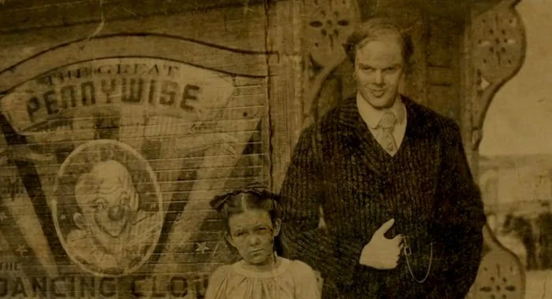

There's another missing boy in town!
So far, no trace has been found of Richie Tozier, who is believed to have walked out the back door of his home at around 6:45 p.m. on July 4. At that time, the area was experiencing heavy rainfall. Local media reported that on Sunday, about 500 people searched canals, rice fields, shrubbery and ditches within a 1.5-kilometer radius of the house, but with no success. Helicopters and dogs have also been used in the search during the past week. Richie's mother told police she took her eyes off him just for a few minutes while she was drying her 4-year-old daughter's hair, and he was gone. After searching the house, she called 911. Reion is about 1.65 m tall, has cropped hair and was wearing shorts and a pale blue, pajama top when last seen at home.
Upcoming Movies

The 1983 horror novel by the American writer Stephen King is going to the big screen as a movie with the same name.Pet Sematary was nominated for a World Fantasy Award for Best Novel in 1984 and it's the greatest accomplishment Stephen King has made so far.
The Bob Gray Circus comes to the town once again!
The Bob Gray Circus, which has made the town happy since Derry is a town itself, is now coming to celebrate its 100th year bringing smiles to our family (and specially children). Don't forget to buy your tickets this summer and go see Pennywise, the dancing clown! When he's around, we'll all float too!
